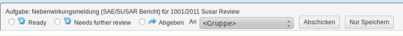

Aufgabenliste¶
Erledigen Sie Ihre Aufgaben über das Aufgaben-Box in der Übersicht oder im Aufgaben-Menüpunkt.
Funktionen¶
Allgemeines¶
Das Aufgaben-Box zeigt Ihnen alle Aufgaben an, die Sie sich genommen haben (Meine), die Sie zugeteilt bekommen haben (Übernommen), die Sie übernehmen können (Offen) sowie Vertretungstätigkeiten von verhinderten Personen (Vertretung).
In der ersten Zeile können Sie aus den angezeigten Kategorien (Meine, Übernommen, Offen, Vertretung) auswählen. Die zweite Zeile ermöglicht Ihnen, die angezeigten Aufgaben nach bestimmten Studien (AMG, MPG, Diplomarbeit, Expedited, Andere) zu filtern. Standardmäßig sind alle Filter aktiv. Wenn Sie einen Filter deaktivieren, werden Ihnen Studien dieser Kategorie nicht angezeigt. Aufgaben der gleichen Aufgabenstellung werden in Gruppen zusammengefasst. In den Klammern steht die Anzahl der Aufgaben.
Sie können auch nach einer bestimmten Aufgabenart suchen (z.B. Einstufung und Zuteilung). Dafür wird in das Eingabefeld Anfangsbuchstabe oder -silbe eigegeben. Es werden automatisch Vervollständigungen angezeigt.
Sortieren der Aufgaben¶
Sie können die Aufgaben entweder nach ihrem Stichtag, oder nach dem Zeitpunkt ihrer Erstellung sortieren.
Annehmen einer offenen Aufgabe¶
Offene Aufgaben nehmen Sie an, indem Sie darauf klicken. Die Aufgabe ist somit für Sie reserviert (unter Meine Aufgaben zu finden) und für andere Personen nicht mehr ersichtlich.
Der Link Vorschau gibt Ihnen die Möglichkeit, eine Aufgabe anzusehen, ohne Sie zu übernehmen.
Erledigen einer Aufgabe¶
Wählen Sie mit einem Klick eine Ihrer angenommenen Aufgaben aus, um Sie zu bearbeiten. Sie werden, je nach Art der Aufgabe, zur betreffenden Stelle weitergeleitet. Über Fragen zum Workflow informiert Sie die Hilfe-Seite Übersicht aller studienbezogenen Aufgaben. Dort finden Sie auch Hinweise zu den Funktionen des Workflows: Fertig, Weitere Überprüfung erforderlich, Abgeben an, Abschicken, Nur Speichern. Diese Funktionen dienen dem Arbeitsablauf.
Lesezeichen¶
Wenn Sie die momentane Filtereinstellung speichern wollen (z.B. “Formale Prüfung Einreichung”), klicken Sie mit der rechten Maustaste auf Lesezeichen. Es öffnet sich ein Feld. Klicken Sie dort auf den Link, mit dem Sie ein Lesezeichen erstellen können (z.B. “Lesezeichen erstellen”). Geben Sie dem Lesezeichen einen Namen und speichern Sie es ab.